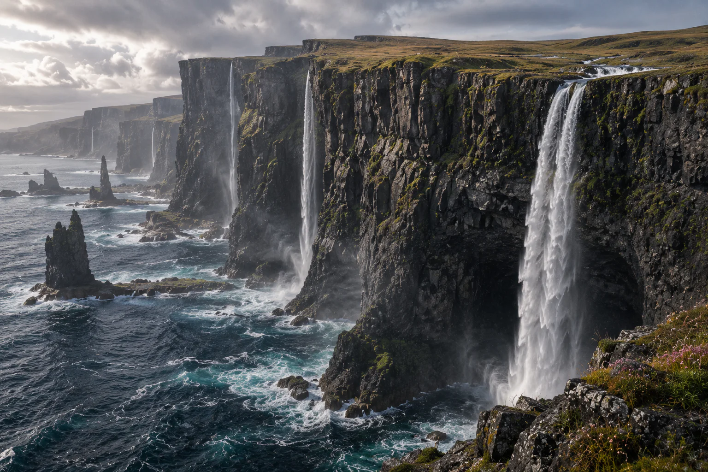

Place record 01 · Maritime west
Orra
A cool coastal country of steep shores, old towns and an intimate knowledge of sea and weather.
Orra faces the open sea from a coast of high cliffs, waterfalls and narrow settlements. The regional record begins with its maritime landscape and the lives shaped by it.
The full cultural and geographic account is still being assembled. This page gathers what is already established without closing the map around what remains unknown.
Regional field index